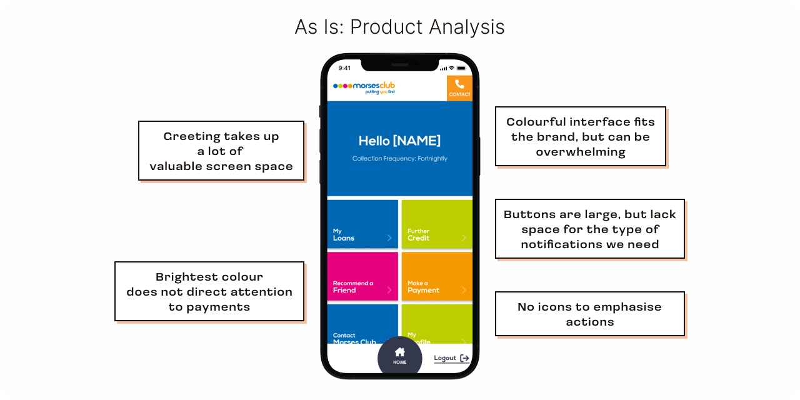
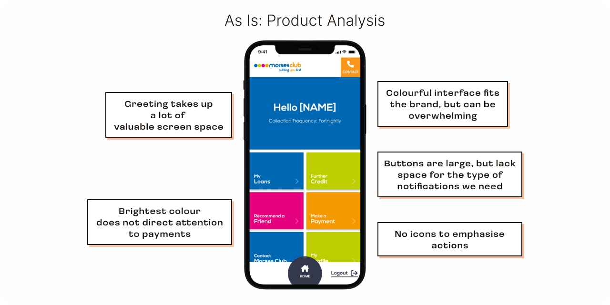
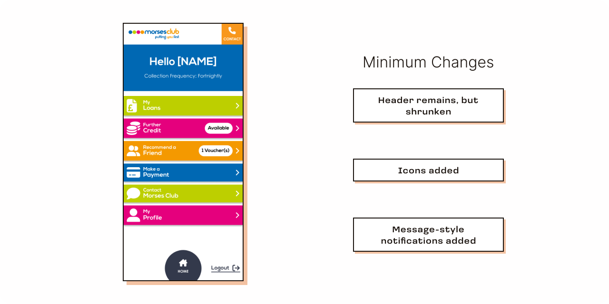
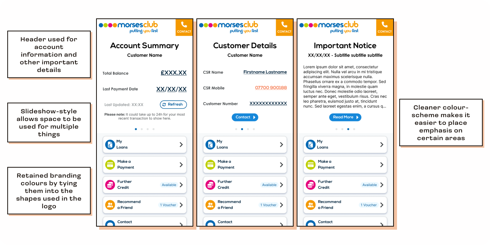
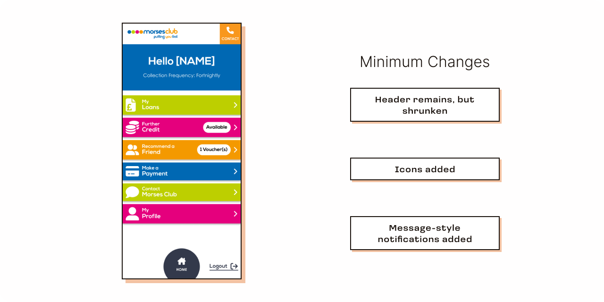
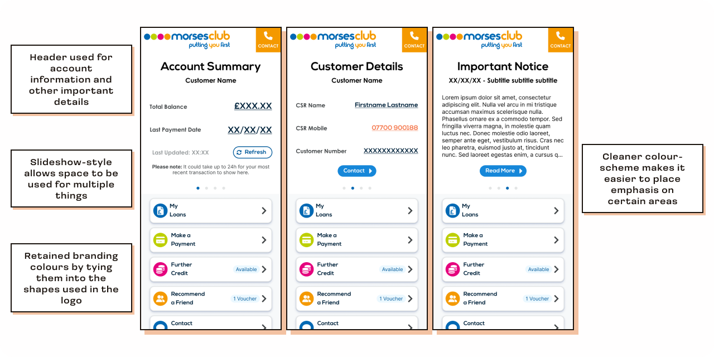

MCL - Customer Portal Rework
Account dashboard for finance applications, payments, loan details and personal data management.
Details
Scope:
Full-time work | Improvement on existing product
Role:
Concept | Research | UX & UI design
Tools:
Figma | Figjam | Hotjar
Problem
The customer portal served as a vital hub for users to manage personal data, apply for
finance, make payments, and access loan information. However, the platform design was
outdated, and modifying it previously depended heavily on third party development.
The portal suffered from an outdated design that underutilised available screen space;
lacking modern features and clear functionality. It also lacked crucial visual cues such as
icons, badges and distinct button shapes, compromising it’s usability and clarity of purpose
for users.
Proposed Solution
Removing the non-functional “hero” banner and reducing the bright colours to declutter the
visual layout while assigning meaning and recognition to the retained colours.
On-screen actions would be re-ordered based on user and business priorities. Icons and
badges would be introduced with the aim of guiding customers towards frequently used and
essential features.
The layout would also be newly optimised for mobile.
Key Question
How do we make the shift towards a more function-focussed portal without stripping it of the brands personality?
Research
Upon comparison with our direct and indirect competitors, it became apparent that our portal fell
short of customer expectations.
While our portal had an inefficient “Hello” banner, competitors utilised their headers to deliver
relevant product news and display customer balances, providing more valuable information.
Coloured buttons, while aligning with the brand, lacked clarity due to the absence of icons, vague
action titles, and shared colours across unrelated features. This would pose challenges for users
with impaired colour vision and situations requiring black-and-white displays, impeding action
identification and page distinction.
 

Ideation
After creating the initial Figma design sketches, I collaborated with the Portal team, leveraging
their experience with direct customer interaction. This collaboration spanned several weeks and
involved multiple feedback sessions. Valuable insights emerged from this iterative process,
indicating that customers would benefit from condensed announcements in a smaller header.
Additionally, it was identified that prominently displaying customer number, balance, and customer
service agent contact details on the initial home screen would provide easy access to vital
information typically required when reaching out to us for assistance.
 



Visual Language
Third-party icons were utilised to expedite the process, and where required, custom vector icons
were created for specific user needs, enhancing user comprehension and navigation through visual
cues.
These icons, integrated into coloured spheres following the logo design, reinstated brand
identity without compromising clarity.
Vital details such as announcements and customer information were deliberately presented in
black-and-white high-contrast, ensuring enhanced readability and ease of location for users.
Morses Colours
0068B3
BDCF00
E5007D
F49900
Component Library
Established a Figma Component Library post-wireframe development, housing reusable elements for
consistency and scalability across current and future designs.
This approach streamlined implementation for programmers and QA testers by ensuring cohesion across
current and future designs. The creation of this library promoted design consistency, easing
implementation and facilitating efficient testing and development without extensive oversight.
Conclusions
Streamlining our portal design gave our site better clarity of purpose and we received less contact from customers asking for assistance with it.